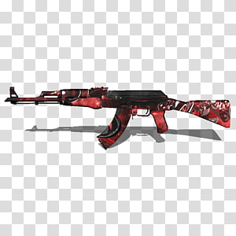

FÍSICA RENOVADA
Humo dinámico, iluminación mejorada y servidores más precisos redefinen la experiencia competitiva.
Counter-Strike 2 es la evolución del shooter táctico competitivo. Precisión, estrategia y habilidad al máximo nivel.
Humo dinámico, iluminación mejorada y servidores más precisos redefinen la experiencia competitiva.


Juega en torneos, sube rangos y compite contra jugadores de todo el mundo.
Gunplay basado en habilidad real.
Decisiones tácticas en cada ronda.
Coordinación para ganar partidas.
Elige tu arma — domina el campo

Un disparo, un kill. La AWP es el arma más temida del mapa: precisión absoluta a larga distancia para los jugadores más disciplinados.

El rifle más icónico del juego. Potencia bruta, primer disparo letal y un skin que lo convierte en leyenda viva del Counter-Strike.